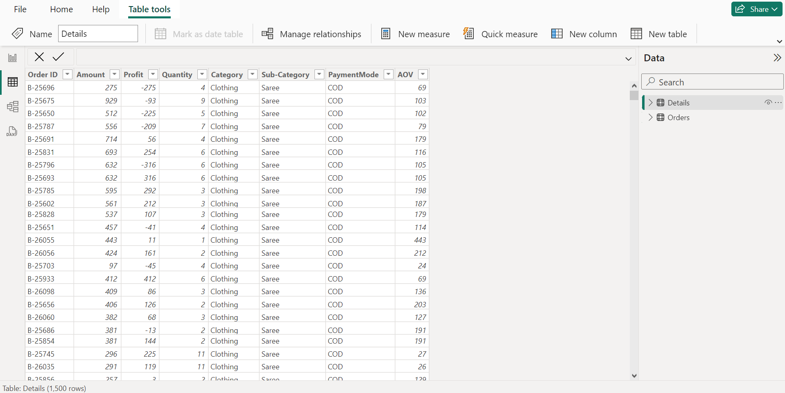
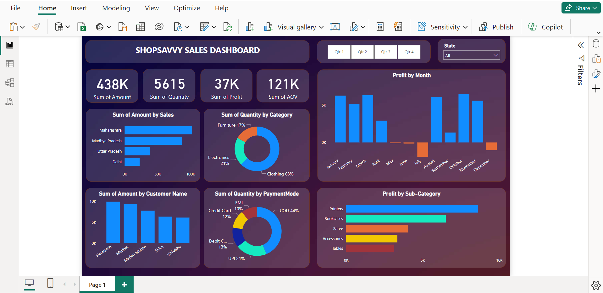

ShopSavvy Sales Dashboard: Analyzing sales
Goal
The ShopSavvy Sales Dashboard project aims to identify the factors contributing to sales of different categories and provide actionable insights to increase customer turnover rate, improve customer retention, increase the sales based on the analyzed data .
Download from GitHub!Background Information
The dataset includes information about the Orders madeby each costumer based on their Order ID, address and their respective order details. Our objective is to help ShopSavvy create an informative and interactive dashboard to track and analyze their online sales across the country.
Setup
The foundation of this project was built on ensuring clean and accurate data. I implemented a rigorous cleaning process to remove duplicate entries that could have introduced bias. Furthermore, to enhance the visual representation of the data, I created a new column specifically for "average order value." Finally, I leveraged Power BI's query tool to perform a comprehensive data quality check. This check ensured there were no missing values and that each field contained the correct data type. This meticulous approach to data preparation guaranteed a solid foundation for reliable analysis.
Fig 1. This image shows the dataset after it was loaded.
These steps were essential to ensure that the data was properly formatted for analysis and would yield accurate results.
Dashboard Design and Creation.
With the processed data, I created a Sales analytics dashboard that presents key insights on employee attrition. The dashboard includes charts showing attrition sales by profit, customer, state, and amount, providing a comprehensive view of factors contributing to attrition within the company. These visualizations can help inform sales decision-making and guide targeted efforts to reduce attrition and retain valuable customer while enhancing their sales.
Fig 2. This image shows the ShopSavvy Sales Analytics Dashboard.
In addition to creating the charts mentioned earlier, I also added slicers to the Sales analytics dashboard. These slicers allow the user to filter the data by various criteria such as Quarter and State. This provides a more dynamic and interactive user experience, allowing the user to explore the data in greater detail and gain deeper insights.
Conclusion
The Sales analytics dashboard created using Power BI is a powerful tool for making informed decisions about Sales tactics. It demonstrates my skills in data analysis and visualization. The skills I have acquired in this project can be applied to various industries and domains, helping organizations make data-driven decisions and achieve their goals.